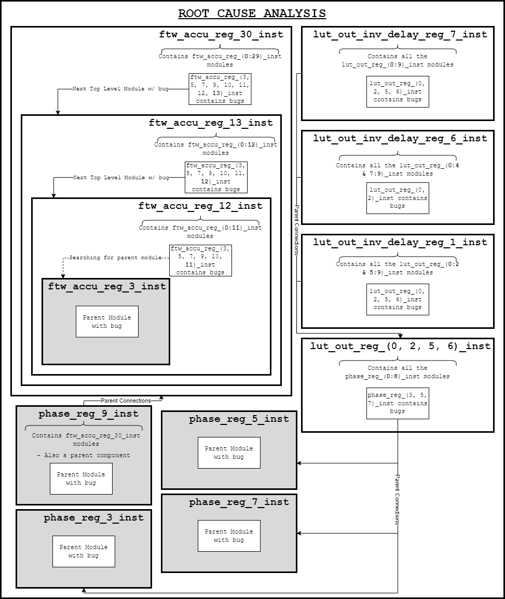
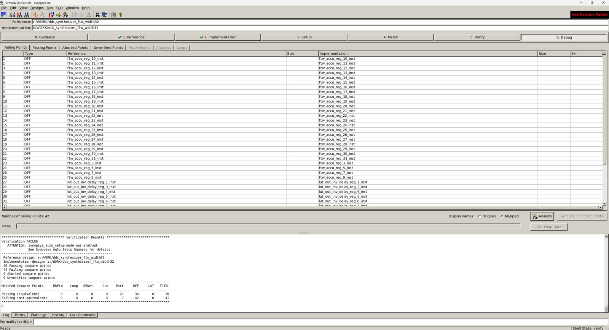
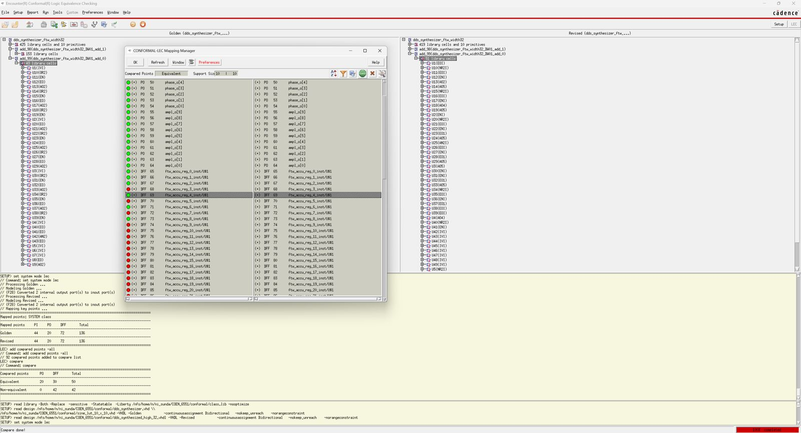
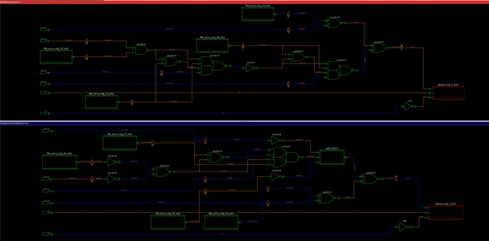
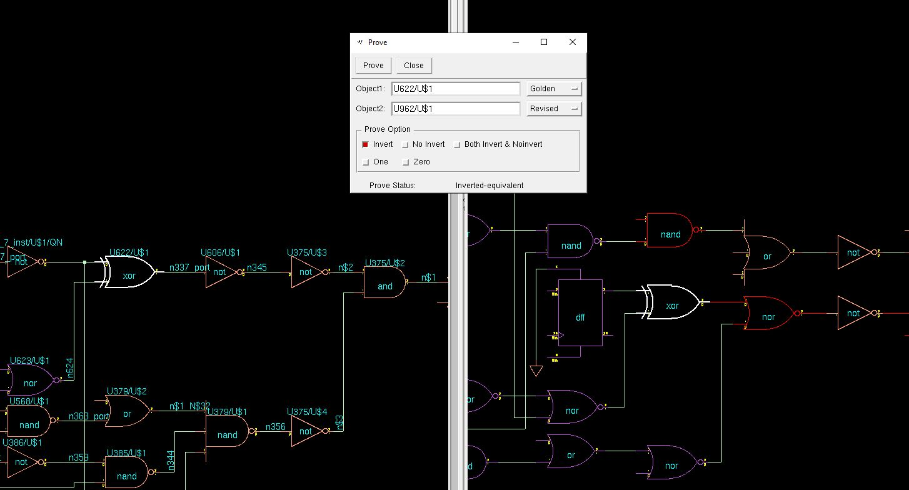

42 failing compare points. 14 bugs. One proof.
A direct digital synthesizer was synthesized to gates, and then someone broke the netlist on purpose. This site walks through how formal verification finds every one of those bugs, and it runs a real equivalence checker in your browser while you read.
The design under test
A DDS turns a number into a sine wave. Every clock it adds a frequency tuning word to a phase accumulator and looks the phase up in a sine table. Play with it before we try to break it.
The core is Martin Kumm's open-source dds_synthesizer (2009): a 32-bit phase accumulator, a 10-bit phase, and a 10-bit signed amplitude. Only a quarter of the sine period is stored (256 words). The two phase MSBs select the quadrant: bit 8 mirrors the table index, bit 9 negates the result.
The output frequency is
fout = FTW / 2N · fclk, N = 32
At 100 MHz the frequency resolution is 100 MHz / 232 ≈ 0.023 Hz. The original datasheet writes 2M (the phase width) in this formula and 2N in the phase formula; the two exponents are swapped. Theorem T6 below proves the corrected version.
Four register stages sit between the inputs and ampl_o. A new phase offset reaches phase_o after one clock and ampl_o after three; a new tuning word takes one clock longer because it passes through the accumulator first. Step the pipeline and watch the values move.
rtl/dds_synthesizer.vhd; the model is checked against the GHDL simulation sample by sample.ampl_o (staircase) against the ideal sine. Right: the phase as a pointer, its quadrant, and which of the 256 stored words is read. In quadrants 2 and 4 the index runs backwards (28 − low); at exactly 90° and 270° that index would be 256, which does not fit in 8 bits, so the RTL has a special "peak" case.From RTL to gates
Synthesis rewrites 110 lines of VHDL into about 620 standard cells. Nobody can review that by eye, which is why the rest of this page exists.
In 2024 the RTL was synthesized with Synopsys Design Compiler (compile -exact_map) onto class.lib, a teaching library with 109 cells such as ND2 (2-input NAND), AO2 (AND-OR-invert) and FD2 (D flip-flop with asynchronous clear). The result is the golden netlist.
The course then handed out a second netlist of the same design, synthesized differently and with bugs planted in it. That buggy netlist is what we have to debug.
The repository now also synthesizes the refactored RTL with open-source Yosys + ABC onto the same library, and proves that result equivalent too.
Area in class.lib units. Flip-flop counts differ because synthesis removes registers that can never change.
What synthesis removed, and why that is fine
The RTL has 74 flip-flops; Design Compiler kept 72. Every sine value is non-negative, so bit 9 of lut_out is always 0, and so is its delayed copy. An equivalence checker has to recognise such constant registers rather than report them as unmatched. Yosys went one step further: bit 0 of −x always equals bit 0 of x, so it merged lut_out_inv_delay[0] into lut_out_delay[0]. The checker in this repository matches such registers by function instead of name, the same signature analysis Formality performs.
The refactored RTL
The original code mixes the non-standard std_logic_arith and std_logic_unsigned packages. That makes the comparison phase(7 downto 0) = conv_std_logic_vector(0, 8) ambiguous: a strict VHDL analyser (GHDL) rejects the file unless told to relax the rules.
The new rtl/dds_synthesizer.vhd uses only numeric_std, keeps every register name, documents each pipeline stage, and checks its generics. Because a refactor is exactly where silent mistakes hide, it is proven cycle-exact with the original: 94 of 94 compare points, including the two constant bits.
-- original: ambiguous without -fexplicit use IEEE.STD_LOGIC_arith.all; use IEEE.STD_LOGIC_unsigned.all; if quadrant_2_or_4 = '1' and phase(PHASE_WIDTH-3 downto 0) = conv_std_logic_vector(0, PHASE_WIDTH-2) then -- refactored: numeric_std, named intent use ieee.numeric_std.all; peak <= quadrant_2_or_4 = '1' and phase(QW-1 downto 0) = 0; ... if peak then lut_out <= to_signed(2**(AMPL_WIDTH-1) - 1, AMPL_WIDTH);
Equivalence checking
Simulation asks "does it work for the inputs I tried?". Equivalence checking asks "is there any input at all on which these two circuits differ?", and answers with a proof or a counter-example.
3.1 The miter
Connect both circuits to the same inputs and XOR their outputs. The circuits are equivalent exactly when that XOR can never be 1. On the right are two real ways to build the carry of a full adder: the textbook sum of products, and the single AO5 cell plus inverter that the buggy netlist uses in its accumulator.
Three inputs means 8 cases, so we could simply try them all. For a 32-bit adder that would be 264 cases. Formal tools instead build a canonical representation, a binary decision diagram, or ask a SAT solver whether the XOR can be 1.
A BDD is canonical for a fixed variable order: two circuits compute the same function exactly when they produce the same diagram. Both carry circuits below collapse to the same diagram.
3.2 Cutting a sequential design into compare points
The DDS has memory, so comparing only outputs would require reasoning over every possible input sequence. Equivalence checkers avoid this by matching registers: when two flip-flops correspond (same name after synthesis, or same function), their outputs are treated as the same free variable. What remains is one combinational question per register input and per output bit. These are the compare points: 20 output bits plus 72 flip-flops gives the 92 you see in the Formality report.
If every compare point passes and the registers start in the same reset state, the designs agree on every clock cycle forever. That follows by induction on time: equal state and equal inputs give equal next state and equal outputs.
3.3 Run it yourself
This is the real check, on the real netlists, computed in your browser. Pick an implementation, run it, and click any square for the counter-example. The 14 fixes from section 4 can be switched on one at a time to watch the failures disappear.
Hunting the bugs
A failing compare point says where a difference is observed, not where the bug is. One wrong gate low in the accumulator carry chain fails 23 flip-flops at once.
4.1 How it went in 2024
The original project debugged by hand in the Formality and Conformal schematic viewers: open a failing point, compare the reference and implementation cones side by side, trace back to the first gate that differs, patch the VHDL, re-run. The root-cause analysis diagram on the right shows the reasoning, from failing flip-flops back to their common parents.
Five repair attempts survive in the repository. They fixed the adders and the negation chain but never the lookup table, and each patch added cells:




phase_reg_3.
prove: two internal nets are inverted-equivalent.4.2 Automatic diagnosis
The new flow (formal/fv/diagnose.py) automates that hunt with a classic design-error model:
- Simulate both netlists on 2048 random states at once, one bit per test.
- Localise: flip each gate's output; a gate that corrects failing vectors is a suspect.
- Correct: try the likely mistakes at each suspect: wrong cell type, swapped pins, missing or extra inverter, flip-flop wired to the wrong net. Keep a change only if it repairs a compare point and breaks nothing.
- Escalate for interacting bugs: rewire to a dangling driver plus a gate fix, or a two-gate search that may undo an earlier guess.
- Prove the patched netlist with SAT. Nothing is accepted on simulation alone.
The whole run takes about five seconds. The chart shows the failing (point, vector) pairs after each step, taken from the actual log.
4.3 The fourteen bugs
Eleven cells have the wrong type and three flip-flops are wired to the wrong net. For those three the correct drivers were still in the netlist, connected to nothing. Their Design Compiler names, N371, N375 and N376, sit in the same sequence as the D-input nets of their neighbouring flip-flops (N372, N374, N377). Tick a card to apply its fix in Figure 6.
4.4 Would simulation have found them?
For each bug alone, 256 random tests ran from reset for 2048 clocks each, with a random tuning word and phase offset, comparing every output on every clock. Almost every test exposed each lookup-table and negation bug within 100 cycles. Bugs in the accumulator carry chain need a specific carry pattern to reach the top bits, and most random tests never see them.
The equivalence check finds each of them in one pass, with an exact counter-example, and proves the absence of any others.
Proving properties and theorems
Equivalence checking needs a trusted reference. When there is none, we state what the design must do and prove it.
Equivalence checking
Design A against design B. Needs a golden reference; answers "did anything change?". Used for RTL vs netlist and golden vs buggy.
Property checking
One design against a specification written as assertions. Proven by bounded model checking and induction over clock cycles.
Theorem proving
General mathematical facts the design relies on, proven for all inputs, here with the Z3 SMT solver over bit-vectors.
5.1 Induction over time
To prove "P holds in every reachable state" we prove two things. Base: starting from reset, P holds for the first k cycles. Step: from any state, if P held for k consecutive cycles, it holds in the next one.
The step starts from any state, including states the design can never reach. With k = 1 the solver can pick an unreachable state that satisfies P but steps straight into a violation. Such a state is a counter-example to induction. It is not a bug, just a proof that is too weak. A larger k, or an extra invariant, rules it out.
The toy on the right is a 3-bit counter that wraps from 5 back to 0, with the property "never 7". States 6 and 7 are unreachable. Try the step case with k = 1, then with k = 2.
5.2 Four properties of the DDS
A monitor (formal/props/dds_props.vhd) wraps the RTL and compares it against an independent specification: a full 1024-entry sine table computed straight from sin(), with no quadrant folding. Each property is proven by k-induction in the repository's own SAT-based engine. All four fail the step at k = 1 (pipeline registers can hold combinations no real input sequence produces) and are proven at k = 2.
5.3 Who checks the specification?
A proof is only as strong as its properties. To test them, seven realistic mistakes were planted in copies of the RTL. Bounded model checking must find a counter-example trace for each. All seven were caught.
5.4 Theorems behind the design
Some facts sit below any particular implementation: why a quarter table is enough, why negation cannot overflow, why the frequency formula holds. Z3 proves each for every input by showing its negation unsatisfiable. T2b is deliberately false: its counter-example, phase = 256, is the reason the RTL needs its peak special case.
5.5 A better pipeline, proven equal
The original registers both +sin and −sin and picks one with a multiplexer after the registers, so the output is combinational. rtl/dds_synthesizer_lean.vhd applies the sign before a single output register: 62 flip-flops instead of 74, a registered glitch-free output, and the same value on every clock.
Name matching fails here because 22 of the original's flip-flops and 10 of the new design's have no partner. The proof matches the 52 registers that do correspond and lets k-induction handle the rest. As with the properties, k = 1 is undecided and k = 2 proves it.
Findings
What the revisit established, each backed by a check that runs in the repository's CI.
The buggy netlist contains exactly 14 bugs
11 cells of the wrong type (ND2I where OR2 belongs, OR3 where AN3 or NR3 belongs, and similar) and 3 flip-flops wired to the wrong net. Repairing only those 14 cells, without adding a single cell, makes all 92 compare points pass against both the golden netlist and the original RTL.
The misrouted flip-flops left their real drivers dangling
Three XOR cells in the buggy netlist drive nothing. They are the intended D inputs of
lut_out_inv_delaybits 1, 5 and 6; their net names continue the numbering of the neighbouring D nets. Dangling logic next to a failing register is a strong diagnostic hint.The 2024 manual repair reached 88 of 92
The last attempt fixed the adders and the negation chain by adding 48 cells. The four failing points left were all lookup-table bits (
lut_out0, 2, 5 and 6), caused by four wrong gates in the table decode logic.Random simulation misses the accumulator bugs
Only 7% of 2048-cycle random tests expose the carry bug at
add_98/u180, and under half expose the others in the accumulator. By contrast, more than 99% of tests exposed every table and negation bug within 100 cycles.The datasheet's frequency formula has its exponents swapped
It should read f = FTW / 2N · fclk with N the accumulator width, and φ = PTW / 2M · 2π with M the phase width. The repository README carried the error forward; both are corrected.
The original RTL is not portable VHDL
Mixing
std_logic_arithwithstd_logic_unsignedmakes one comparison ambiguous; GHDL rejects it without-fexplicit. The refactored RTL usesnumeric_stdonly, analyses cleanly as VHDL-93 and VHDL-2008, and is proven cycle-exact with the original.Three flip-flops in the RTL are redundant
lut_out[9]andlut_out_delay[9]are always zero, andlut_out_inv_delay[0]always equalslut_out_delay[0]. The lean pipeline removes 12 flip-flops in total and registers the output, proven equivalent by k-induction.phase_oleadsampl_oby two clocksThe phase output is the stage-1 register, while the amplitude it produces appears two stages later. Anyone using both outputs together must delay the phase. This is now documented in the RTL header.
Reproduce everything
Formality and Conformal need licences. Every result on this page also comes from open-source tools, in one command.
# Ubuntu 24.04: GHDL, Yosys, Python solvers sudo apt install ghdl yosys pip install -r requirements.txt make quick # formal flow, ~30 s make sim # GHDL testbench on 6 implementations make formal # + simulation vs formal experiment make site # refresh docs/data for this page
Four independent engines agree on every result: the SAT checker built on GHDL and Yosys, Yosys's own equiv_induct, the netlist simulator used for diagnosis, and the BDD checker in this page. The original Formality and Conformal scripts are kept, cleaned up, in scripts/.
| path | contents |
|---|---|
| rtl/ | refactored RTL, lean variant, original in rtl/original/ |
| netlists/ | golden, buggy, repaired, Yosys, 2024 attempts |
| formal/fv/ | front-end, SAT equivalence checker, diagnosis, k-induction, theorems |
| formal/props/ | property monitor and full-wave specification |
| tb/ | self-checking GHDL testbench |
| tools/ | Liberty reader, netlist reader and patcher, LUT generator, Python model |
| scripts/ | Design Compiler, Formality, Conformal and Yosys scripts |
| docs/ | this site; the checker lives in docs/js/ |